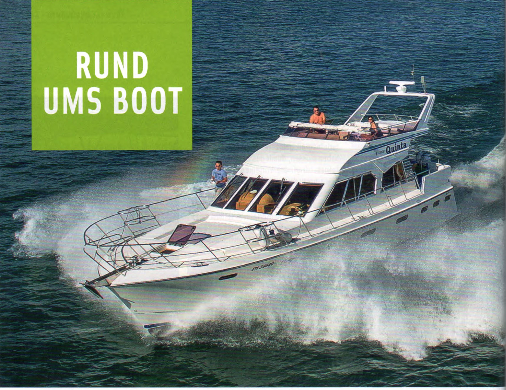
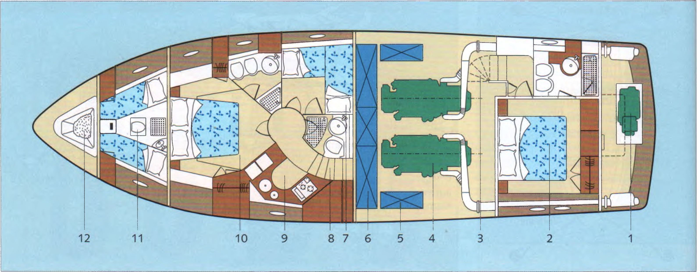
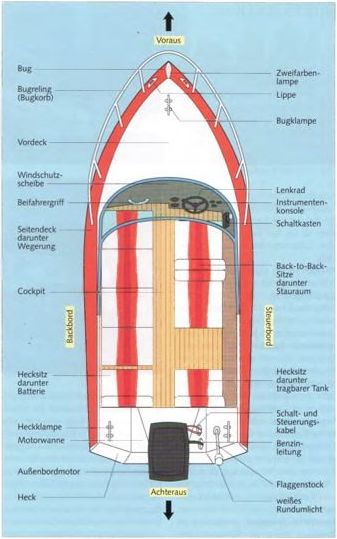

Надувные лодки изготавливаются из ПВХ, полиуретана или особо прочного Hypalon. Наиболее распространённый материал для моторных лодок — стеклопластик (GFK). Серийные яхты из стеклопластика выпускаются длиной до примерно 20 метров. Для более крупных индивидуальных судов применяют также алюминий или сталь. Дерево сегодня играет лишь незначительную роль. Голландские производители специализируются на стальных серийных яхтах размером начиная с 10м.

Интерьер 18-метровой яхты, которая, например, может развивать скорость до 55 км/ч с двумя двигателями 760 P5:
